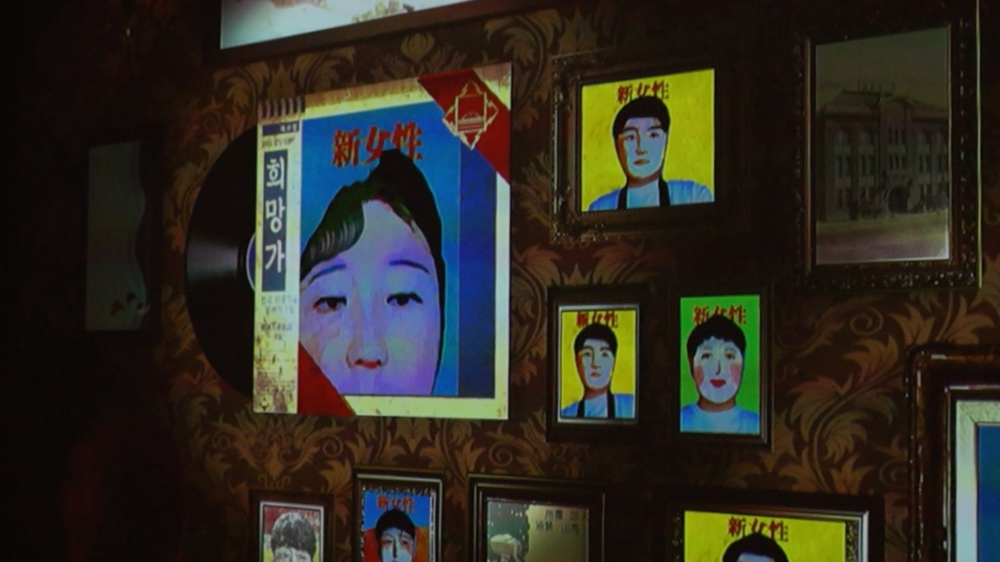
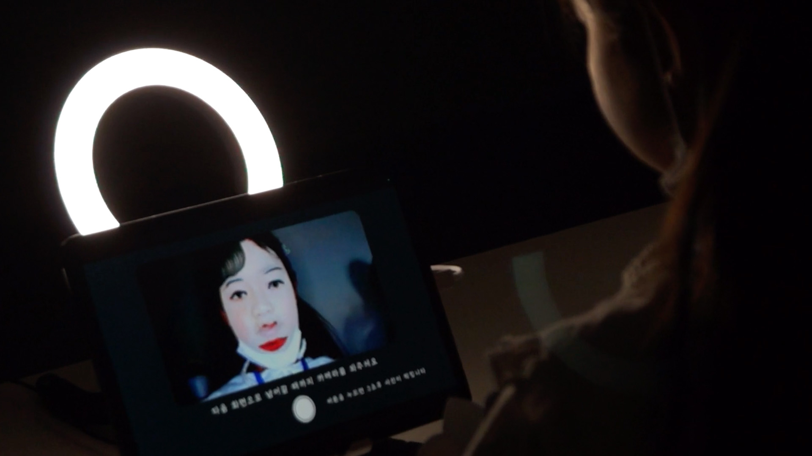
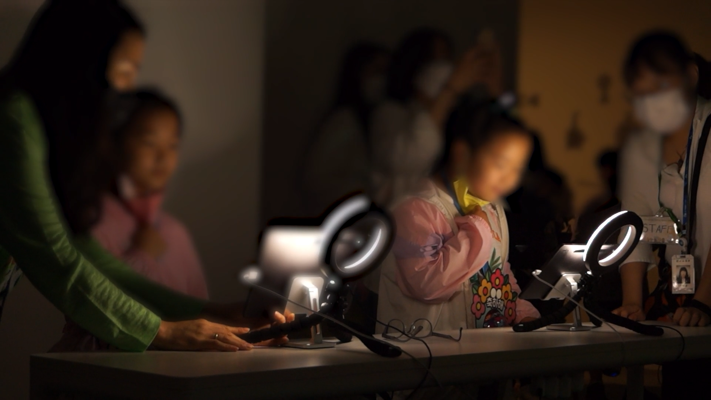
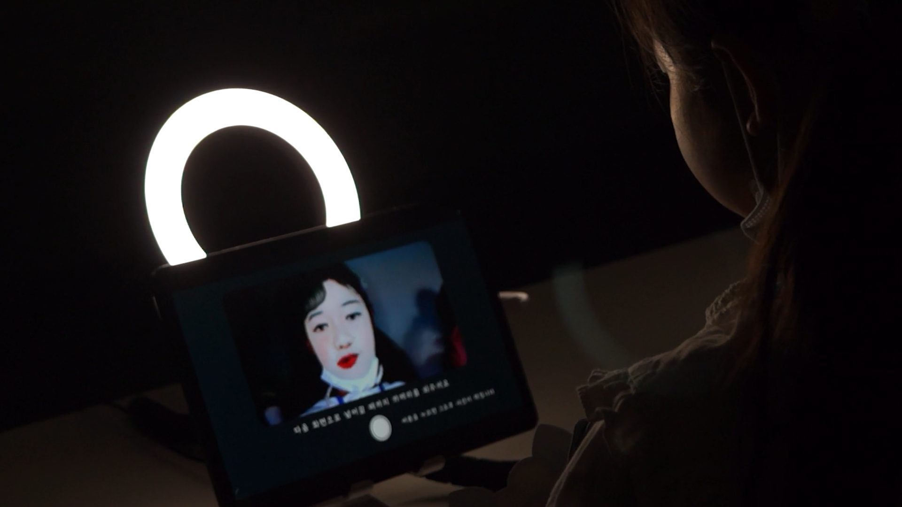
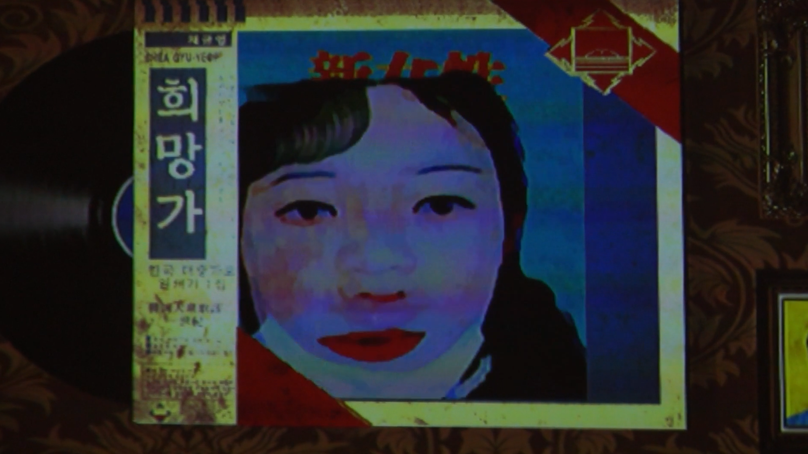
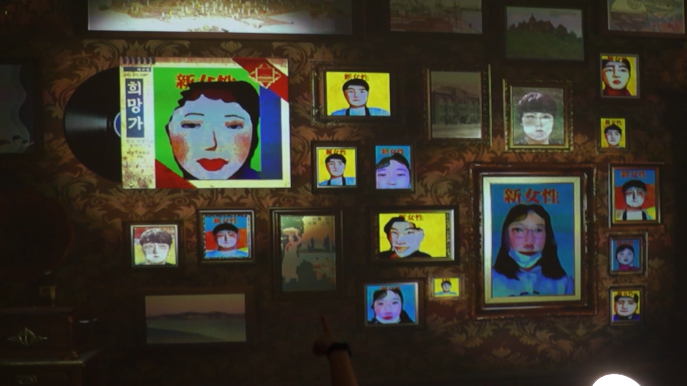
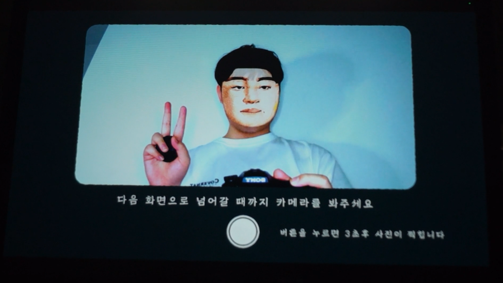
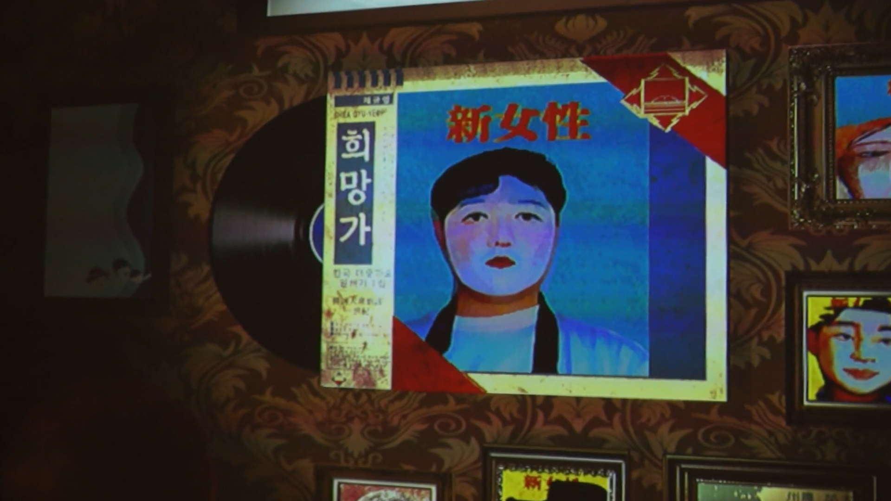

Jemulpo Photo Studio lets museum visitors see their portraits transformed into early-modern magazine imagery. The capture, transformation, display, and archival steps form one continuous interactive application.
A visitor sits for a portrait, sees their image recomposed as a historical-style publication cover, and encounters the output on a separate display alongside other generated portraits.
As Technical Director, I connected Unity C#, Python, OpenCV face processing, Barracuda person segmentation, shader-based image treatment, TCP communication, and automated image saving.
I designed the flow as a small production pipeline rather than a single visual filter: input had to survive segmentation, composition, transfer, display, and archival storage during public use.
Real-time facial detection using OpenCV DNN models integrated in Unity. Detection region extended to include hair and head area via post-processing on facial landmarks, ensuring style transformation affects the full portrait.
Custom face-swap system merging visitor features with pre-designed 1920s "New Women" portrait references. Style filters layered through custom shader-based watercolor and pointillist noise blending, referencing early magazine printing textures.
Unity Barracuda-based person segmentation separates subjects from background. Backdrop replaced with vintage magazine-style layouts dynamically mapped to color palettes extracted from 1920s Korean publications.
Generated portraits sent via TCP connection to an external display wall, appearing in a looping slideshow simulating a virtual photo gallery. All portraits auto-saved in timestamped folders for archival and curatorial review.
The live archiving process reflects on photography's role as both documentation and performance — turning spectators into participants of a digitally reconstructed modern history, exploring the interplay between gender, modernization, and visual media.







